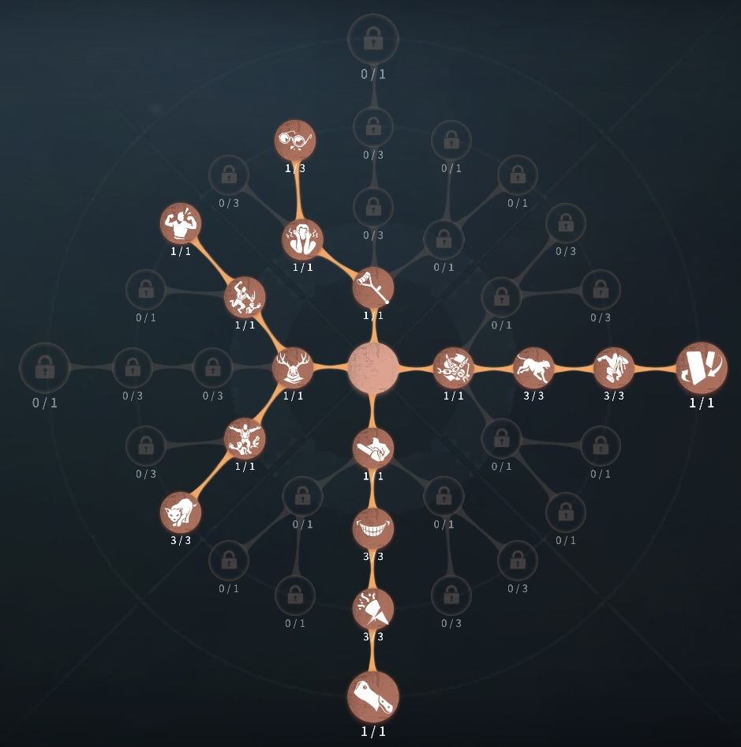
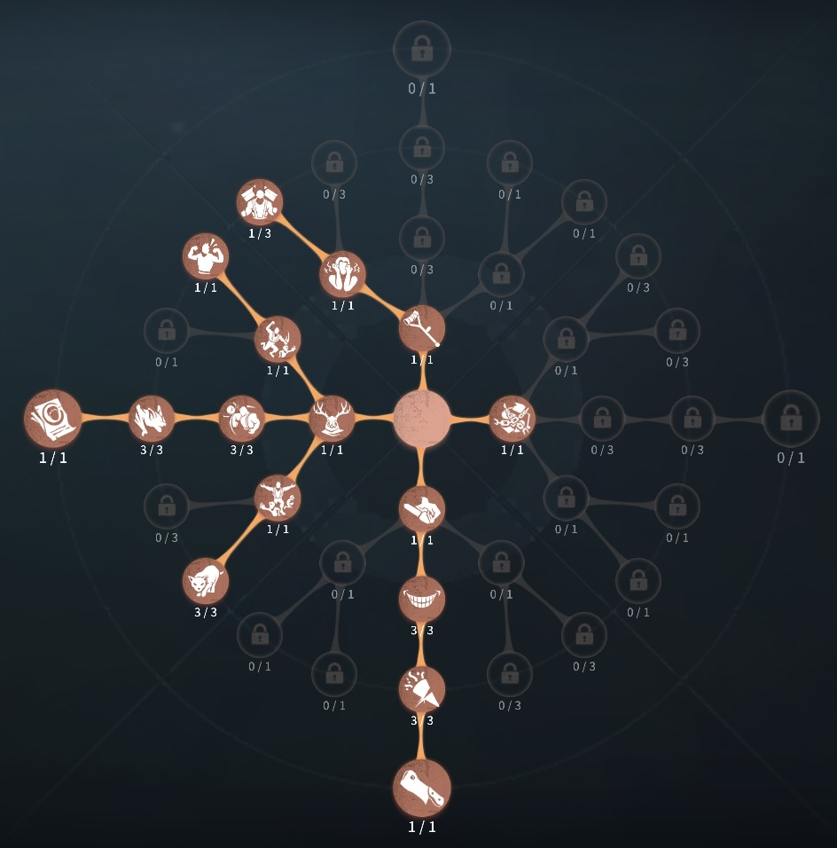

復讐者(レオ)の評価
マップ上にハンターが3体！？
外在特質とスキル
特質1:怨魂業火
・通常状態での怨みの火蓄積進捗が毎秒（0.3）・サバイバーを50秒間追撃（1）
・スキルや板倒しなどによるスタン（0.3）
・暗号機の解読が完了（0.4）
で怨みゲージが溜まっていく。最大3つまで溜めることができる。
存在感０：もらい火
・怨みの炎を1消費して25秒間持続する黒レオを召喚できる。 怨みの炎のスキルボタンを長押しすることで視界範囲のサバイバー1名を選択し、追撃させることができる。選択しなかった場合は通電前は暗号機、通電後はゲートを巡回し15m以内にサバイバーがいればサバイバーを追撃する。・吊られているロケットチェア周辺では影の待機時間が4.5秒になる。
・召喚を解除した場合残り持続時間に応じて怨みの炎を回収する。
・黒レオはレオ（本体）より基礎移動速度が遅く、気絶や一部を除いた行動阻害を受けない。
存在感1：パペット操作
・スキルボタンをタップ、長押しで、設置と指定の位置へと投げて設置することができる。・パペットの付近のサバイバーの位置が表示される
・パペットスキルを再度タップでパペットとレオ（本体）の位置を交換し、短時間加速効果を得る。
・パペットへ怨みの炎をスライドすることで怨みの炎を1消費し黒レオと同様の行動をするようになる。パペットの攻撃が命中するか、パペットと位置交換を行うと行動を停止する。
・サバイバーはパペットを約16秒で破壊することができ、ハンターは破壊中は入れ替わることができない。怨みの炎の行動能力も失う。
・復讐者は設置されているパペットを回収でき、回収すると破壊進捗や位置交換のクールタイムがリセットされる。
存在感2：多重パペット操作
・もう一体のパペットを生成できるようになるハンターの立ち回り方
1. 初動の立ち回り
最初は、できるだけ怨みゲージを早く溜めることが重要です。怨みゲージが溜まることで黒レオを召喚できるようになるので、サバイバーを追い詰めるための第一歩です。
・サバイバーを追跡:
目の前にサバイバーがいる場合、そのサバイバーの動きをしっかり追いかけます。サバイバーの近くで怨みゲージが溜まりやすいため、視界内にサバイバーを捉え続けるようにしましょう。
・スタンを受け入れる:
サバイバーが障害物を使って板スタンなどを仕掛けてくる場合、あえてスタンを受けて怨みゲージを増加させることを考えます。スタンを受けることでゲージが溜まりやすくなるので、戦略的に使えます。
2. 黒レオを使うタイミング
怨みゲージが最大に近づくと、「黒レオ」を使うことができます。この黒レオが非常に重要な役割を果たします。
・黒レオの使い方:
黒レオはサバイバーを自動で追い詰め、攻撃を行いますが、完全にサバイバーを捕まえられるわけではありません。サバイバーの逃げ道を塞ぐために、黒レオを適切なタイミングで召喚することが大事です。例えば、サバイバーが窓越えや板を使おうとするタイミングで黒レオを呼ぶと効果的です。
・例:
サバイバーが板を使った直後や窓を越えようとするタイミングで黒レオを配置すると、サバイバーが回避できなくなることが多いです。黒レオは板を破壊することができるため、これをうまく活用することでサバイバーの逃げ道を奪うことができます。
サバイバーとの連携攻撃: 黒レオを使って追い詰める際には、自分自身も同じターゲットに向かって攻撃を行います。黒レオと本体が同時にサバイバーを追うことで、サバイバーに圧力をかけ、逃げ場をなくすことができます。
3. チェイス中の立ち回り
レオは本体でもチェイスを強くすることが可能ですが、黒レオとの連携を取ることでさらに強力になります。
・黒レオと一緒にチェイス:
黒レオがサバイバーを追いかける際、自分はそのサバイバーに近づいてプレッシャーをかけます。サバイバーが黒レオに引き寄せられるとき、板や窓を使うタイミングを読み、サバイバーが予測できない動きをすることが大切です。
・パペットを活用した回避:
もし自分が追われる立場に立った場合、パペットの使い方を意識すると良いです。パペットを配置して本体との位置を入れ替えることで、サバイバーにとって予測困難な動きができます。
4. ゲートや暗号機前での立ち回り
ゲートや暗号機が解読されるタイミングでは、サバイバーが逃げようとする動きを予測して、黒レオや本体で制圧することが求められます。
・ゲート前の監視:
サバイバーがゲートの開放を狙って動いているとき、黒レオを使ってその動きを封じ込めます。また、ゲート周辺で自分の位置も意識しつつ、サバイバーを追い詰めることが大切です。
・黒レオの巡回:
ゲート付近に黒レオを配置し、サバイバーが脱出しようとするタイミングを狙います。黒レオの巡回範囲を意識して、脱出の瞬間を封じることができます。
5. 注意点
・サバイバーの位置を把握:
黒レオはサバイバーに自動で追いかけるものの、完全に動きが予測不可能ではないため、サバイバーが逃げる可能性のあるルートを封じ込める意識が必要です。サバイバーがどこに行くかを予測し、立ち回りを柔軟に変更しましょう。
・怨みゲージを無駄にしない:
怨みゲージは慎重に使うべきです。無駄に黒レオを使ってしまうと、その後のゲージが足りなくなることがあるので、タイミングを見極めることが重要です。
おすすめの内在人格
裏向きカード型人格
この内在人格は、獲物を追うで確実にチェイスを終わらし、中盤からは警戒で足の速さ、板割りを早くした人格

傲慢型人格
この内在人格は、この内在人格は、獲物を追うで確実にチェイスを終わらし、中盤からは警戒で足の速さ、板割りを早くし、怒りでスタンを軽減した人格


みんなのコメント